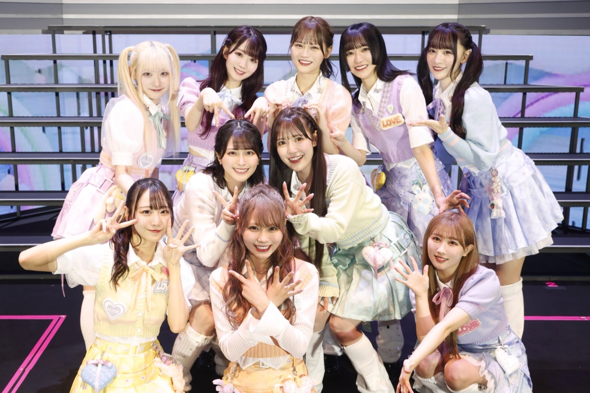

ABOUT =LOVE

指原莉乃による新しいアイドルProject
「＝LOVE（イコールラブ）」がスタートしました。
指原莉乃が自身の理想のアイドルをプロデュースするために、
声優学校として業界一の歴史と実績を誇る代々木アニメーション学院による「声優教育」を施した
新しい「声優アイドル」の初期メンバーを決めるオーディションを実施しました。
去る4月29日、オーディション最終審査が行われ、
指原莉乃プロデューサー自ら、グループ名を「＝LOVE（イコールラブ）」とすることを発表しました。
「＝LOVE（イコールラブ）」という名前には、「アイドルとはファンに愛されなければいけない。
そしてアイドルという仕事も自分が愛さなければいけない。」という想いが詰まっています。
指原莉乃が理想のアイドルを初プロデュースするにあたり、次の通り意気込みを語っております。
アイドルになりたいと思っているだけじゃダメ。まず行動しよう。
9年前の私のように悩んでいる人の背中を押してあげたいです。「好きなことから始めよう」て。
私なんかに何ができるかわからないけど、
アイドルヲタの立場から私の理想のアイドルをプロデュースしたいです。